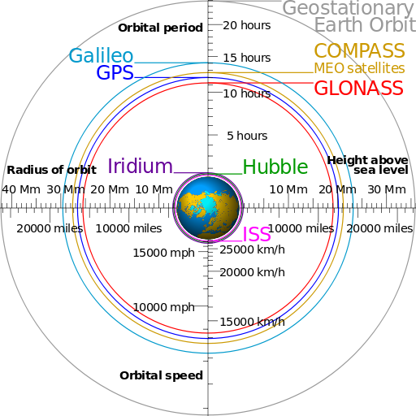
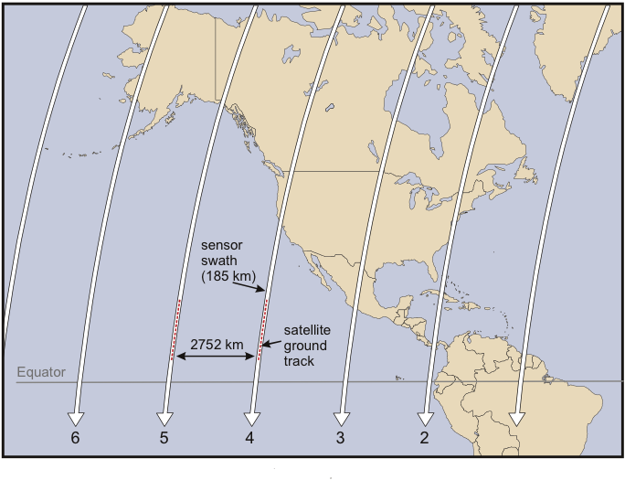

Press 'o' to toggle the slide overview and 'f' for full-screen mode.
Choose the theme in which to view this presentation:Black - White - League - Sky - Beige - Simple
Serif - Blood - Night - Moon - Solarized
Copyright © John Lindsay, 2015

Forward Motion Compensation
GEOG*2420
The Earth From Space
Airborne and Spaceborne
Imaging Systems Part 2
John Lindsay
Fall 2015
Multiband Cameras
Airborne Digital Cameras
- Analog (film) versus digital cameras
- Film camera uses film for image capture, display and storage
- Digital systems may use film as a display and storage medium, but likely stored in digital form
- Film is often transferred to digital format these days by scanning...why do you think?
The Digital Advantage
- Environmental effects are lessened
- Easily stored, reproduced, and transferred (over the Internet)
- Pixels are uniform in size and shape, unlike silver halide crystals
- Can be transmitted from satellites without need for physical collection
The Digital Advantage
- Amenable to use with computers
- Potential for advanced digital image enhancement and analysis using 'soft-copy' photogrammetry/RS software
- Digital cameras can be made to have sensitivity to a broader portion of the spectrum than film
Disadvantages of Digital Imaging
- Long-term storage in digital format
- Very large file sizes...can be a challenge for storage and processing
- Most available digital cameras still have significantly poorer resolutions compared to film
- A large format (9 x 9 in.) digital camera would require 80-400MP! And what about colour?
- This is changing rapidly with the use of imaging systems based on linear arrays and newer digital large format cameras
Airborne Digital Cameras
- Small format: typically < 15 MP
- Medium format: usually 4000 x 4000 pixels or about 16 MP
- Large format: usually based on a linear array of 12,000 detector elements
- Can surpass the resolution of analog (film) cameras)
- But they are very expensive!
- That's equivalent to 144 MP and creates a 4.4GB image!
Digital Image Detectors
- Charge-coupled devices (CCDs)
- Light sensitive material embedded in silicon
- Each ‘potential well’ is ~1 μm and many are connected to form an array
- Respond to brightness more linearly than film
- Complementary metal-oxide semiconductors (CMOS)
- Cheaper but more noisy than CCDs
- Faster and require less power
Digital Image Detectors
Readings
Jensen Chapter 7
How remotely sensed data are transformed into useful information
Orbital altitude and period are related

Altitude vs. Period vs. Speed
Orbital Characteristics
- Orbit Type:
- Equatorial
- Polar
- Near-polar
Prograde (<90°) orretrograde (>90 °)
Orbital Characteristics
Geosynchronous - Satellite in the same position in the sky at the same time daily
Geostationary (special case of geosynchronous)- Circular equatorial orbit with 35,786 km orbital altitude
- 23 hr 56 min 5 s orbital period
- Appears to stay in the same location in the sky
Sun-synchronous - Crosses latitudes at the same time of day
- 600–800 km altitude; periods 96–100 min; inclinations ~98° (i.e. retrograde)
- Useful for Earth imaging applications
Typical sun-synchronous orbit
Low-Earth, Medium-Earth, & High-Earth Orbits
Types of Satellite Imaging Systems
- Thermal Scanners
- Multi-spectral (MS) Scanners
- Imaging Spectrometers (Hyperspectral)
- Radar (SLAR) & laser altimeters (LiDAR)
- Note: A single satellite platform may have more than one imaging system
The Landsat Program Timeline
The SPOT Satellite Program
- Data sold commercially by SPOT Image Inc.
- A commercially oriented program intended to be operational rather than experimental
- 832 km altitude, inclination of 98.7, crosses equator at 10:30AM
- SPOT 6 launched Sept. 2012 and SPOT 7 launched on June 2014 and subsequently sold to Azerbaijan
SPOT satellite components
Fine-resolution Commercial Satellites
- Starting with SPOT-5 we have entered into a new era of fine-resolution commercial satellite imagery.
GeoEye-1 provides 0.41 m pan and 1.65 m multi-spec imagery
Commercial satellite image providers
- SPOT Image
- DigitalGlobe
- EarlyBird-1
- IKONOS
- QuickBird
- GeoEye-1, (GeoEye-2 in 2016)
- WorldView-1, WorldView-2, WorldView-3
- Planet Labs (Blackbridge Ltd.; formerly RapidEye): 5 RapidEye sats
WorldView-3
Is there need for aerial photos anymore?


Advantages of fine-res sat data
(compared to airborne imaging)
- Wide swaths compared to aerial photos mean less need to mosaic images
- Satellite is a much more stable platform
- Potential for short-term repeat surveys, i.e. within days
- Wider window for acquisition
- Far cheaper ($2-$12 / km2)
Disvantages of fine-res sat data
(compared to airborne imaging)
- Issues with atmospheric/weather conditions
- Resolution is still not quite as good and may be degraded outside the US (20 in. or 50.8 cm; this has been relaxed as of 2014)
- Tasking issues (can get bumped by priority)
- Restrictive licences